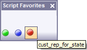

Creating Scripts attached to Forms and Form Objects
To create a new script:
From the menu bar, select Scripts > New Script, and choose Use Action Script Editor or Use Xbasic Code Editor.
If you are going to create a script:
Select either the Script Genie or Xbasic radio buttons.
Enter the name of the script in the Script Name field.
Optionally, check Put script on Favorites list. This will make the script appear in the Scripts menu for the form or browse.
Optionally, enter a comment in the Script Description field. Your Favorites list will show the description in place of the script name.
Optionally, check Associate image with script to display the Image Name field.
Click
 to the
Insert Image dialog box to select an image.
to the
Insert Image dialog box to select an image.If you are going to create a function:
Display the Functions tab.
Enter the Function Name.
Select the Return Type.
Optionally, if you know what arguments the function will take, check Specify optional arguments.
Enter the names and types of the arguments.
Click OK to continue or Cancel to discard your inputs.
If you selected Script Genie in step 2a, the Action Script Editor opens.
If you selected Xbasic in step 2a or decided to create a function, the Code Editor opens.
When you are done, save the script and it will appear in the Scripts menu for the form or browse.
Selecting Scripts > Show Favorites Toolbar displays a toolbar with buttons for each of your favorite scripts.

A Script Favorites Toolbar Using Only Images
The toolbar remains open while you work, giving you quick access to your favorite scripts.See Also